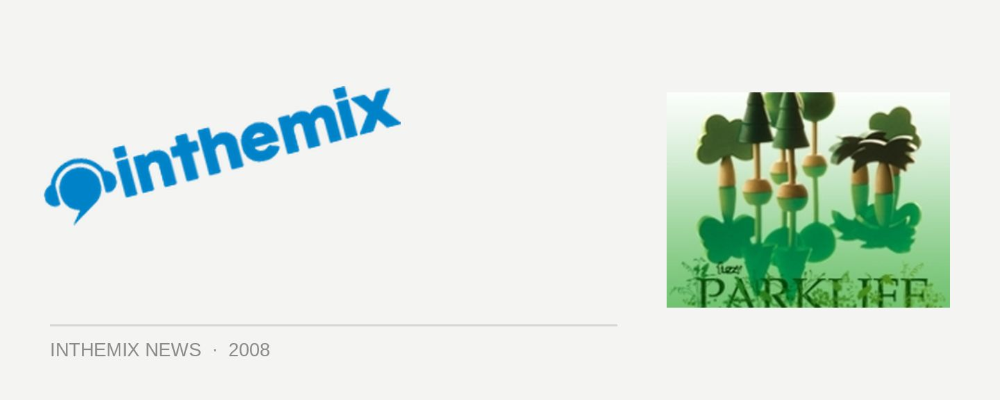

Get the Parklife lineup here - supported by ITM!
LOOKING FOR UPDATES ON PARKLIFE 2009? CHECK OUT WWW.INTHEMIX.COM.AU/PARKLIFE FOR ALL THE LATEST INFO!
It’s one of the biggest events on the dance music calendar, and it’s also the party that heralds the beginning of the summer festival season – that’s right, it’s time to start thinking about Parklife! Kicking off as a small boutique festival in Sydney back in 2000, since then it’s grown to an event that sells out to 30,000+ crowds in its hometown, as well as taking it to over 100,000 people across the country, with events in Melbourne, Brisbane, Perth and Adelaide.
For the 2008 tour Fuzzy have snagged themselves a deliciously tasty headliner in the form of Goldfrapp. One of the world’s most successful electronic crossover acts since their formation in the late 90s, it’s the magic combination of Alison Goldfrapp’s gorgeous vocals and Will Gregory immense musical talent that’s allowed the band to reinvent themselves over and over again. From the haunting laidback grooves of their debut Felt Mountain to when they were really thrown into the spotlight with the electro/glam rock of Black Cherry, the pair have been consistent right up to this year’s mellow but critically acclaimed Seventh Tree.
It’s not all about Goldfrapp, though, as the Parklife lineup will be backed by the dual talents of Soulwax and 2manydjs: the former seminal indie/electro live performers and the latter their DJing alter ego who can take credit for popularising the mashup style. Other live acts on the bill include the raunchy electro mayhem of Peaches and the UK grime of Dizzee Rascal, along with a fine selection of familiar DJ names that include Martin Solveig, Plump DJs, Yuksek, Diplo and many more.
Just like us, Fuzzy’s head honcho himself John Wall is looking forward to the fun coming up. “I’m very excited about this year’s line-up,” he told ITM. “Each year we try to put together a bunch of acts whose music we love, who make for a roaring party and also keep broadening the range of musical ideas on offer. We want to keep changing and progressing musically, while keeping some links to where we’ve been. I think the artists you’ll get to see at Parklife this year will do that.”
Parklife will be rearing its head at the following dates around the country:
Adelaide – Saturday 27th September
Melbourne – Sunday 28th September
Perth – Monday 29th September
Brisbane – Saturday 4th October
Sydney – Sunday 5th October
Check out the complete lineup below, and stay tuned to ITM’s Festival Page for plenty more news, interviews, DJ mixes and more as Parklife draws near as we’ll have plenty more coverage to come.
Goldfrapp *
Soulwax
Peaches
2manydjs
Dizzee Rascal
Martin Solveig
Plump DJs
Diplo
Jesse Rose
Does It Offend You, Yeah?
Blackalicious
XXXchange
Metro Area
Elektrons
Yuksek
Van She
Dragonette
Boy 8-Bit
Familjen #
Bag Raiders Live
Ajax
Slyde
Grafton Primary
Van She Tech
& many more
(* excluding Adelaide)
(# excluding Perth)
CLICK HERE FOR THE INTHEMIX FESTIVAL PAGE!